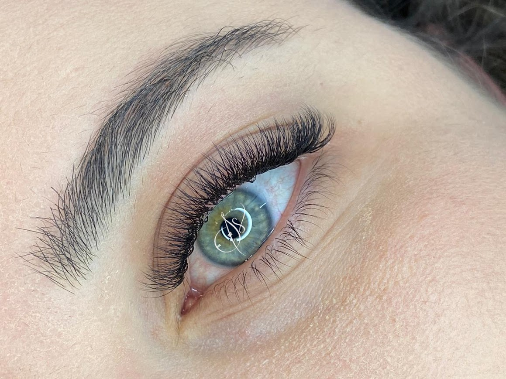
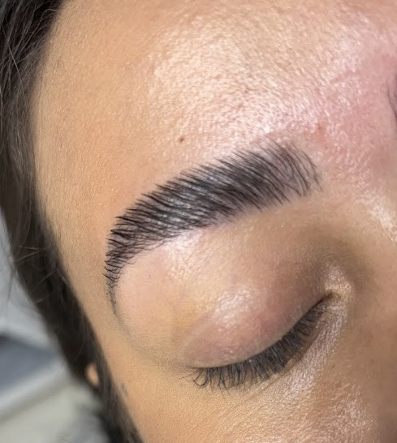
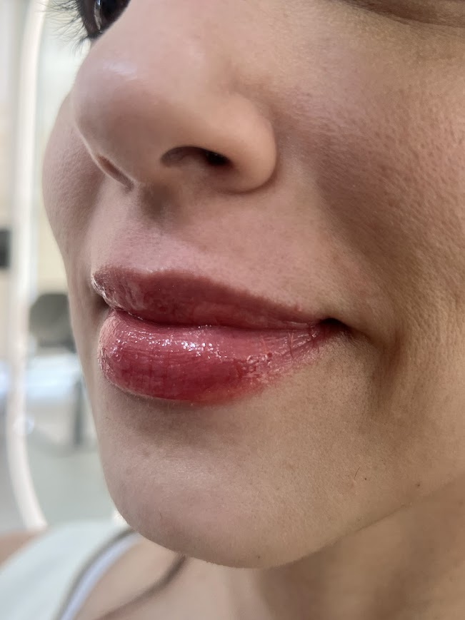
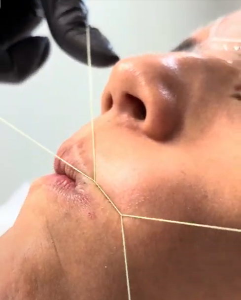

Serviços oferecidos

Cílios
A extensão de cílios se modernizou ao longo dos anos, e com isso novas técnicas surgiram com resultados compatíveis para todos os gostos. Por exemplo, se você não quer uma extensão de cílios muito grande e chamativa, existem alongamentos mais discretos, que preenchem os fios naturais sem muito volume.

Sobrancelhas
As sobrancelhas são mais do que um conjunto de pelos: elas moldam o rosto, protegem os olhos de suor e impurezas, e valorizam a expressão facial e a beleza natural de cada pessoa, transmitindo personalidade e emoções. Um bom design de sobrancelhas, feito por um profissional qualificado, pode realçar o olhar, harmonizar as feições e elevar a autoestima, sendo uma poderosa ferramenta de comunicação e bem-esta!

Lábios
Os procedimentos nos lábios visam a harmonizar e rejuvenescer a região, restaurando volume perdido, definindo contornos e suavizando rugas. O principal procedimento é o preenchimento labial com ácido hialurônico, uma substância segura e biocompatível que hidrata, aumenta o volume e define o contorno labial de forma natural e reversível. Outras opções incluem bioestimuladores para estimular o colágeno e melhorar a qualidade da pele. É crucial a consulta com um profissional qualificado (dermatologista ou cirurgião plástico) para uma avaliação individualizada e para garantir um resultado harmônico e seguro!

Epilação Facial
A epilação facial é a remoção de pelos do rosto, um procedimento que, apesar de comum em mulheres, também pode ser realizado por homens. A pele do rosto é mais sensível do que em outras partes do corpo, exigindo cuidado extra para evitar manchas, irritações e outros problemas. Existem diferentes métodos, como a linha egípcia, que extrai o pelo pela raiz e tem durabilidade prolongada, ou a cera, que exige cuidados específicos devido à sensibilidade da pele.